The chain
The effects act on audio the model has already written; the Model layers act inside the model. The chain sits in the output section: the model's sound, slowed first if Speed is set, goes through De-click and auto level, then the chain, then Dynamics, Width, the low-pass, the limiter and the volume. Bypass on the Output panel skips the output section, the chain included. Session's tracks have effects of their own on each channel strip (gain, high-pass, low-pass, delay and reverb), apart from this chain.
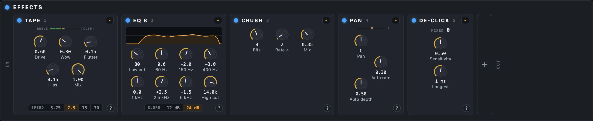
ZoomThe row scrolls sideways once it is wider than the panel. A + in the gap between two effects adds one there and the dashed + adds one at the end; an effect's ▾ menu lists its presets (five to seven for each effect, measured offline on drones, a harp, a synth and drums), keeps presets of your own and removes it (or click the card and press Delete), and its name drags it to another place. Each effect has a light that switches it off, and the light in the panel's header bypasses the whole chain. Every knob takes modulation, and a saved sound keeps the chain and replays it exactly.
A change to the chain does not click. Adding, removing, moving or retyping an effect dips the whole output by about 16 dB, makes the change at the bottom of the dip and brings the level back over 150 ms. Switching an effect or the whole chain on or off crossfades it over 20 ms, and a delay or reverb whose delay time or size changes fades its wet signal out and back in. The effects are written for this instrument in numpy and scipy, and each gives the same output whatever block size it is fed: 512 samples live, a 40 ms frame offline, a whole file in a test.
Each effect

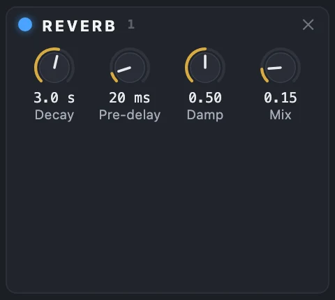

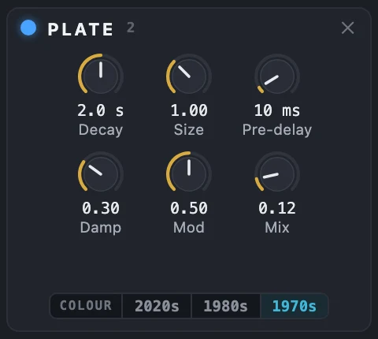

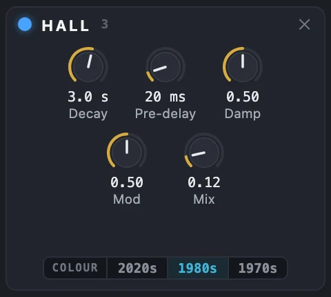

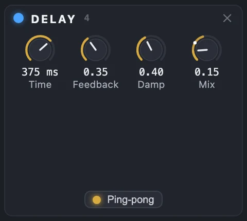

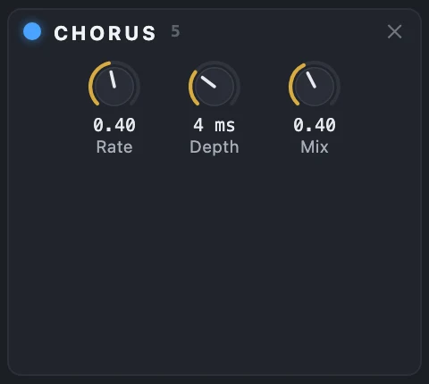

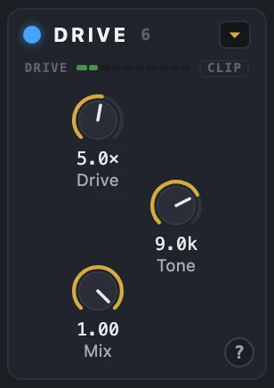

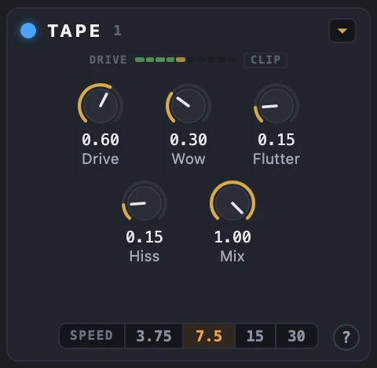

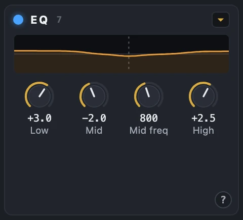

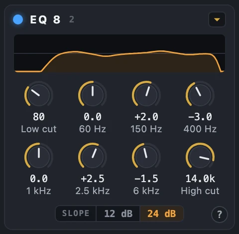

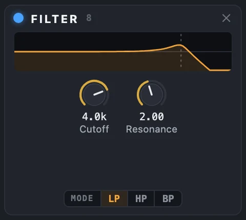

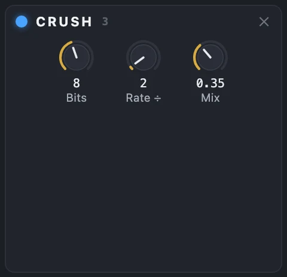

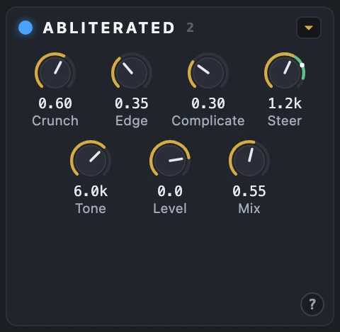

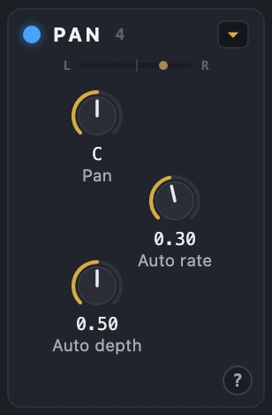

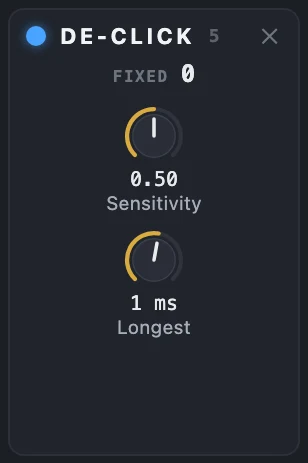
| Effect | What it does | Controls |
|---|---|---|
| Reverb | A feedback delay network of eight lines with a Householder mix and four allpass diffusers before it, after Signalsmith's “Let's write a reverb”. | Decay (0.3 to 20 s), Damp, Pre-delay (up to 200 ms), Mix |
| Plate | Dattorro's 1997 plate tank, with modulated allpasses read by cubic interpolation. Colour: 2020s is clean; 1980s is a darker tank with noisier modulation; 1970s runs the tank at half rate behind a 10 kHz band limit. | Colour, Decay (0.2 to 20 s), Size, Damp, Pre-delay, Mod, Mix |
| Hall | The reverb's network with longer lines, each line's delay wandering along its own smooth random path, with the same three colours. | Colour, Decay (0.3 to 20 s), Damp, Pre-delay, Mod, Mix |
| Delay | A delay line with a low-pass in its feedback loop; Ping-pong throws the repeats from side to side. | Time (20 to 1,500 ms), Feedback (up to 0.95), Damp, Ping-pong, Mix |
| Chorus | Two modulated delays read in quadrature. | Rate (0.05 to 5 Hz), Depth (0.5 to 12 ms), Mix |
| Drive | Gain-matched tanh saturation with a tone filter. A small meter shows how hard the curve is driven, with a CLIP mark. | Drive (1 to 20×), Tone (1 to 20 kHz), Mix |
| Tape | Saturation through a slightly lopsided curve, gain-matched at the model's usual level (−26 dBFS); wow and flutter from a delay line whose length wobbles; a head bump and treble roll-off set by the tape speed; hiss. A meter shows how hard the tape is driven. | Drive, Wow, Flutter, Hiss, Mix, Speed (3.75, 7.5, 15 or 30 inches a second) |
| EQ | A low shelf at 200 Hz, a bell at a frequency you set, and a high shelf at 5 kHz, as RBJ biquads. It draws its response curve. | Low, Mid, High (±12 dB), Mid freq (200 Hz to 5 kHz) |
| EQ 8 | A Butterworth low cut, six bells at 60 Hz, 150 Hz, 400 Hz, 1 kHz, 2.5 kHz and 6 kHz, and a Butterworth high cut, the cuts 12 or 24 dB an octave. It draws its response curve. | Low cut (20 Hz to 2 kHz), six bands (±15 dB), High cut (1 to 20 kHz), Slope |
| Filter | A low-pass, high-pass or band-pass RBJ biquad. It draws its response curve. | Mode, Cutoff (40 Hz to 18 kHz), Resonance (Q 0.5 to 12) |
| Crush | Fewer bits and a lower sample rate. | Bits (2 to 16), Rate ÷ (1 to 32), Mix |
| Abliterated | Heavy distortion: a resonant boost where it bites, two lopsided clipping stages, a wavefolder, an octave and a ring modulator, a cabinet low-pass, and a make-up gain that holds the level. | Crunch, Edge, Complicate, Steer (150 Hz to 5 kHz), Tone (1.5 to 12 kHz), Level (−24 to +6 dB), Mix |
| Pan | An equal-power balance, with an auto-pan whose phase carries on from block to block. A dot shows where the sound sits. | Pan, Auto rate (0.02 to 8 Hz), Auto depth |
| Shimmer | A reverb whose tail is pitch-shifted on each pass. | Decay (0.5 to 20 s), Shimmer (0 to 1), Interval (+12, +7, +19, +24, -12), Damp (0 to 1), Mix (0 to 1) |
| Phaser | A chain of allpass filters swept by an LFO, with feedback. | Rate (0.02 to 5 Hz), Depth (0 to 1), Centre (100 to 4,000 Hz), Feedback (0 to 0.9), Stages (4, 8, 12), Spread (0 to 180 °), Mix (0 to 1) |
| Flanger | A short delay swept by an LFO, with feedback. | Rate (0.02 to 5 Hz), Depth (0 to 10 ms), Delay (0.3 to 10 ms), Feedback (−0.95 to 0.95), Spread (0 to 180 °), Mix (0 to 1) |
| Tremolo | The level swung by an LFO. | Rate (0.1 to 20 Hz), Depth (0 to 1), Shape (Sine, Triangle, Square), Phase (0 to 180 °) |
| Resonator | Tuned comb filters that ring at a root note and a chord. | Root (24 to 84), Chord (Uni, 5th, Oct, Maj, Min, Sus4), Decay (0.1 to 10 s), Brightness (0 to 1), Mix (0 to 1) |
| Pitch | A delay-line pitch shifter with two crossfaded read heads. | Shift (−24 to 24 st), Fine (−50 to 50 ct), Window (20 to 200 ms), Feedback (0 to 0.9), Mix (0 to 1) |
| Freq Shift | Moves every frequency up or down by the same number of hertz. | Shift (−1,000 to 1,000 Hz), Spread (0 to 1), Feedback (0 to 0.8), Mix (0 to 1) |
| Freeze | A spectral hold of the last moment of sound. | Freeze, Blur (1 to 32), Drift (0 to 1), Mix (0 to 1) |
| Compressor | Turns the loud parts down above a threshold, by a ratio. A GR meter shows the gain reduction. | Threshold (−50 to 0 dB), Ratio (1 to 20 :1), Attack (0.1 to 100 ms), Release (10 to 2,000 ms), Knee (0 to 12 dB), Makeup (0 to 24 dB), Mix (0 to 1) |
| Trim | Gain and the stereo field, with no sound of its own: a phase flip on each side, one side on both or the two swapped, width from mono to 400%, bass mono, a DC filter, then gain, balance and mute. | Width (0 to 400%), Gain (−36 to +24 dB), Balance, Bass below (50 to 500 Hz), In, Ø L, Ø R, Mono, Bass mono, Hear bass, DC, Mute |
| De-click | The Output section's de-click as an effect, so it can sit where you want it, before a reverb for example. It counts the bursts it has redrawn. | Sensitivity, Longest (0.2 to 4 ms) |
EQ 8
EQ 8 is a low cut, six bells and a high cut. Each bell is about 1.2 octaves wide (Q 1.2) at a fixed centre; each cut is Butterworth, two sections at 24 dB an octave or one at 12. The curve below is computed with the instrument's own filter design, so it is the curve the card draws.
Tape
Tape is a tape machine's colour written for this instrument. The saturation is a tanh curve tilted a little to one side, which adds the even harmonics, and it is gain-matched at −26 dBFS, about the model's usual level, so Drive changes the colour more than the level; louder material is pressed down, as on tape. Wow and flutter come from a delay line whose length wobbles on two slow sines at unrelated rates and one near 7 Hz. Then comes the EQ of the tape speed, a head bump in the lows and a roll-off in the highs, and hiss read from a fixed table by sample position, so the hiss of a saved sound is the same each time it is played.
Computed with Tape's own formulas. On the left, a sine at the level set, before and after the curve; turn the level up past −26 dBFS and the peaks flatten. On the right, the EQ of the speed: the slower the tape, the larger and lower the bump and the earlier the roll-off.
Pan
Pan is an equal-power balance: at the centre both sides pass at unity, and at either end one side is silent and the other 3 dB up, so the sound keeps its loudness as it moves. Auto rate and Auto depth swing the position on a sine whose phase is carried from sample to sample, and every move is smoothed over 10 ms. A mono sound passes as it is.
Trim
Trim has no sound of its own. It sets the level and the stereo field before the next effect, and checks how the sound holds up in mono. It works in this order:
- In plays Stereo, the left side on both sides (L), the right side on both (R), or the two swapped (Swap).
- Ø L and Ø R flip each side's phase. A side flipped against the other cancels what they share when the sound is summed to mono.
- Width scales the side against the mid: 0% is mono, 100% the sound as it came, 400% four times as wide. Mono sets it to 0%, to hear what the sound loses in mono.
- Bass mono takes the side out below Bass below (50 to 500 Hz) with a 24 dB-an-octave high-pass, so the low end is the same on both sides. Hear bass plays only the mid below that frequency, to hear what Bass mono keeps.
- DC is a 5 Hz high-pass that takes out a constant offset.
- Gain (−36 to +24 dB), Balance, which turns the far side down and keeps the near side at unity, and Mute.
Every switch and knob moves over 10 ms, so flipping a phase or swapping the sides does not click, and the output is the same at any block size. Its six presets were measured like the other effects' on eleven inputs, and each changed every input measurably and broke none.
Abliterated
Abliterated is heavy distortion written for this instrument, in the Distortion group of the add menu with Drive and Crush. Steer sets where it bites: a resonant boost of 12 dB before the clipping, after a low cut at 90 Hz that keeps the lows tight. Crunch drives two tanh stages, each tilted to one side and the second the other way, with a high-pass at 140 Hz between them, from about 2× to 300× (+50 dB) in all. Edge blends in a sine wavefolder that folds the clipped wave back on itself up to seven times, which rings like metal. Complicate adds an octave up, the wave rectified, over the first half of its travel, and over the second a ring modulator at 1.5 times Steer, whose sum and difference tones clang. Tone is a two-pole low-pass standing in for a speaker cabinet. A make-up gain follows the input's power against the output's over 300 ms, so the controls change the character more than the level; Level trims it and Mix blends in the dry sound for parallel distortion.
On Deep techno, whose sound is mostly below 100 Hz, the spectral centroid went from 65 Hz dry to 307 Hz at the defaults, 520 Hz with Crunch at 1 and Edge at 0.8, 1.06 kHz with Complicate at 0.5 and 2.23 kHz at 1, while the level stayed within 3 dB. It costs about 0.13 ms of the 10.7 ms block, and like every effect here it gives the same output at any block size.